Senior designer building visual communication systems for brands, culture, education, and research.
Children's Research Center Responsive Web
2017
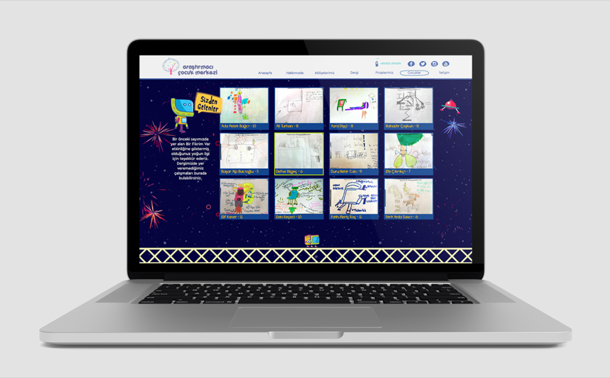
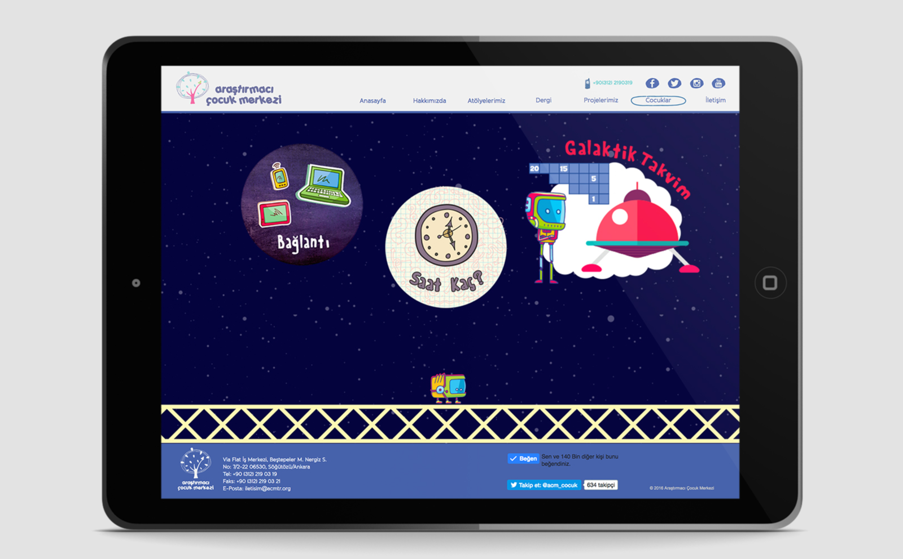
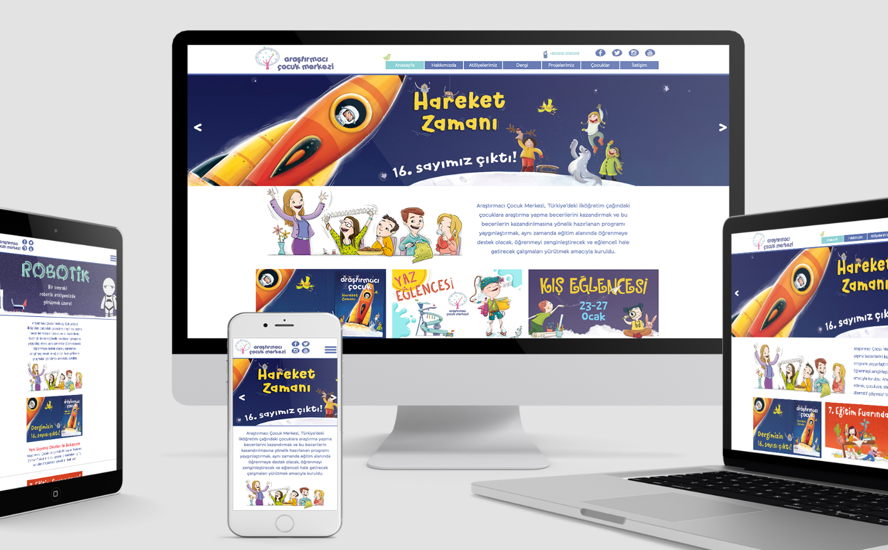
Designed a responsive interactive website for a children research center using Adobe Muse. The project featured basic animations and interactive game pages, creating an engaging digital environment for young users. Developed as a solo project, handling all design and development phases within Muse's visual interface.
Key Features:
Responsive design for multiple devices
Interactive game pages for children
Basic animations to enhance user engagement
Child-friendly interface design
Tools: Adobe Muse
Role: Solo designer/developer
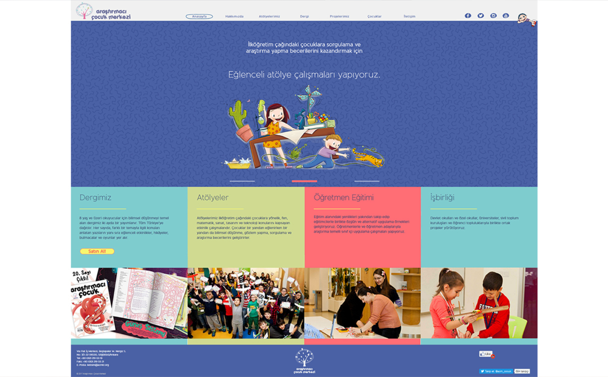
Playful Products Landing Page
2023
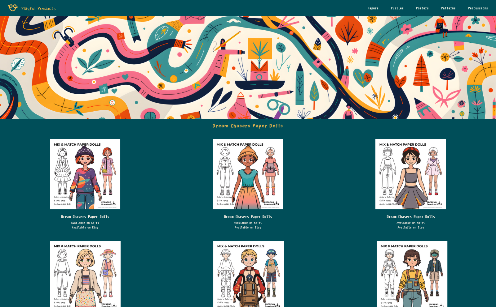
Single-page website built with HTML/CSS featuring custom logo, AI-assisted banner from original designs, and product grid with external purchase links.
Tools: HTML, CSS
Role: Logo design, web development
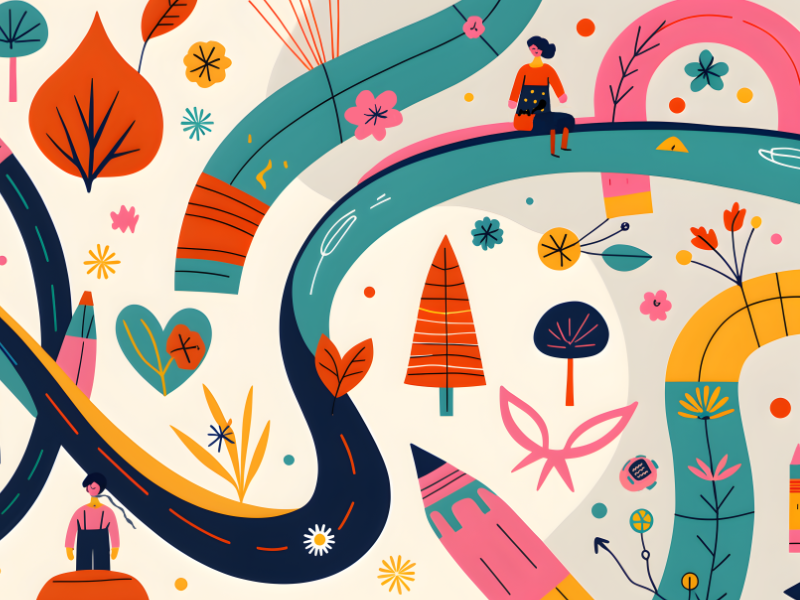
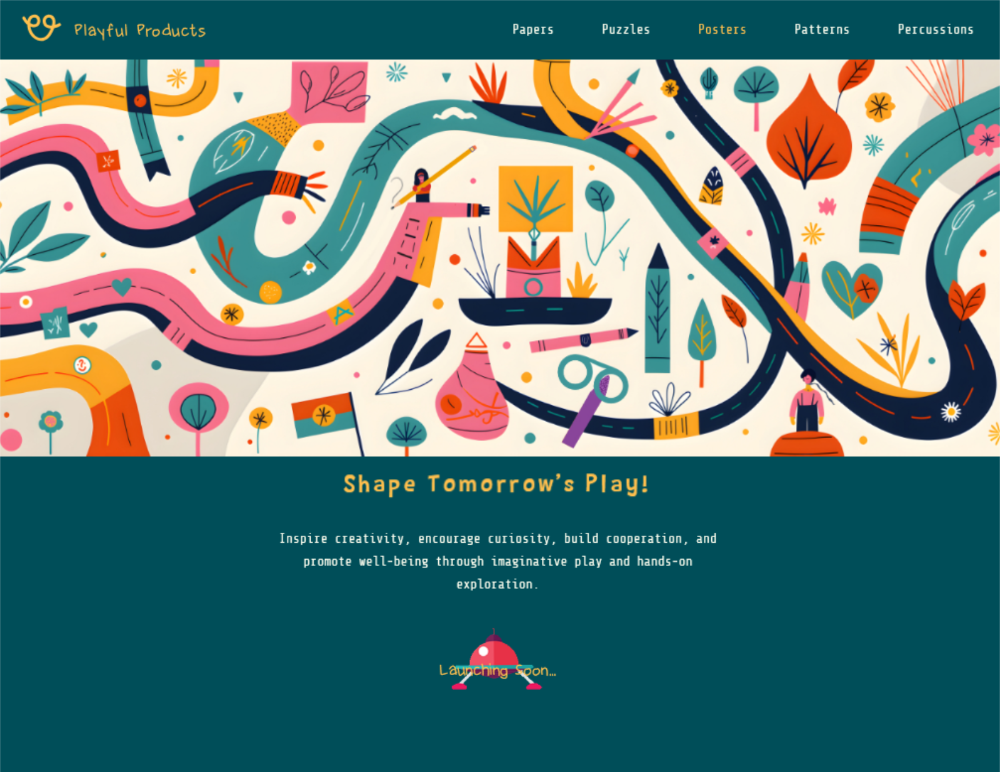
Ismarlasana Restaurant Discovery App
2012
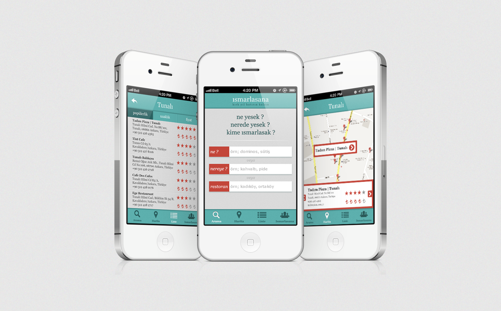
Mobile interface concept for a restaurant and bar discovery platform. Users could explore nearby venues, view menus and prices, and order food or drinks, such as sending a beer or meal to a friend directly through the app. The design emphasized fast, intuitive interaction with minimal steps, combining practical functionality with a playful social experience.
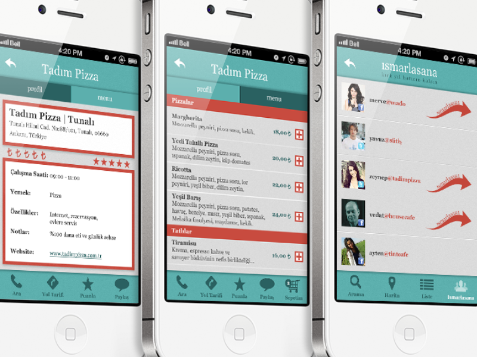
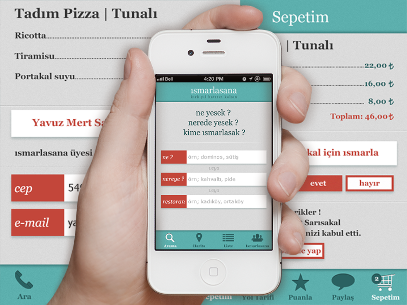
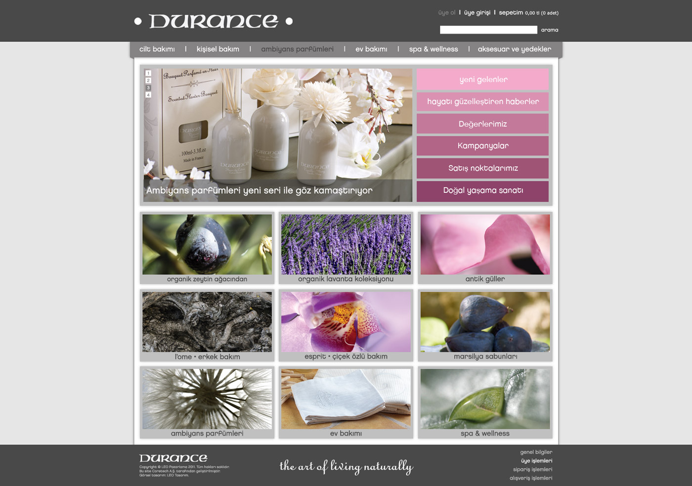
Website design for the Turkish distributor of Durance, a French luxury home fragrance brand. The full site layout was designed in Photoshop, covering the homepage, product pages, and store locator. The design carried over the brand's refined visual identity into a web format suited for the Turkish market, balancing product presentation with e-commerce clarity.
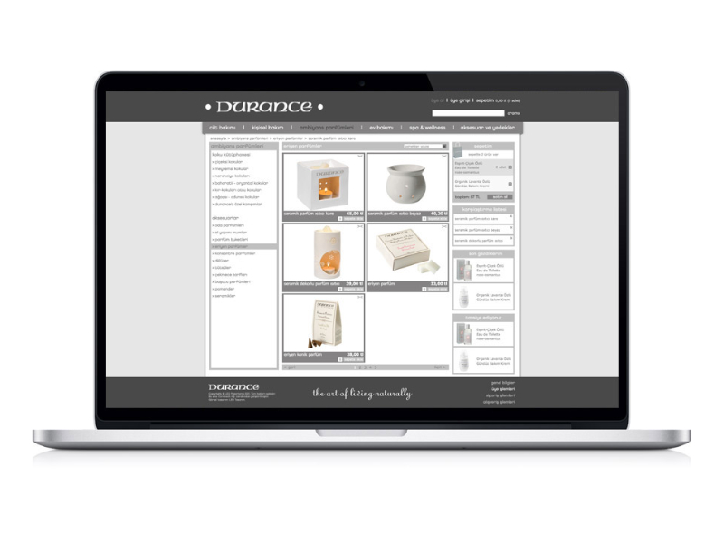
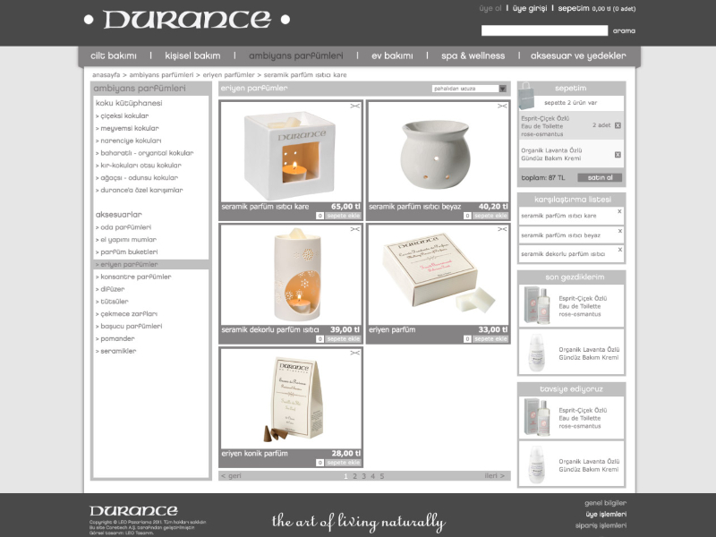